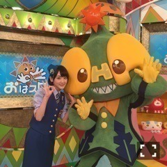

| 2016/07 08 Fri | 下半期！しもしも下半期(ง ˙ω˙)ว |
暑いですね。
毎日毎日やんなっちゃいますね。
私は、早く冬になって欲しいです

でも、金魚飼いたいから
まだ夏でもいいかなぁ。
私のモバメを取って下さってる方は、私がどれだけ金魚欲しいかわかりますよね笑笑
昨日、
舞台版こちら葛飾区亀有公園前派出所の舞台成功を祈り、
香取神社さんでお祈りしてきました

七夕という事で、
夏の舞台稽古と
ツアーを乗り切るために
筋力が付きますようにって短冊に願い事を書きました(ง ˙ω˙)ว
筋トレする気力を保たないとね(ง ˙ω˙)ว
そう！
私生駒里奈、
この度舞台版
こち亀に出演致しまする！
サキちゃんという
舞台オリジナル役です！
約10年前の舞台をベースにまたパワーアップした舞台をするそうで。
私もまだまだお芝居も歌も下手くそだけど、
高めていくぞーー！！！
舞台是非観に来てくださいねっっ！！
じょしらく来た方はわかる、
生駒ちゃん案外出来てたじゃないかと！！笑
皆さんに楽しい時間を届けられる様に、精一杯頑張ります！！
あと！
すっかり申込期間過ぎてましたごめんなさいですが、(´；ω；｀)
「コープスパーティーBook of shadows」の完成披露試写会が7月12日にあります！
チケット取って下さった方どれくらいいるかな？
今回、私も完成品みていないのでワクワクしています！
これる方は、一緒に楽しみましょうね(ง ˙ω˙)ว⭐️⭐️
いよいよ、乃木坂46に三期生が来ますね〜
モバメに送りましたが、
ざっくりいうとヽ(・∀・)ノ
迷っているなら受けよう乃木坂オーディション

前に、二期生が入るって時に手紙を書かせて貰った事があります。
あれも私の素直な気持ちですが、
そのときの気持ちです。
今の私は乃木坂を支える人になりたいと思っています。
だから、
乃木坂でいろんな挑戦がしたいとか、
女優さんになりたいとか、
歌手になりたいとか、
アイドルをやってみたいとか、
少しでも思うのならば、
ウェルカム乃木坂46(ง ˙ω˙)ว
私じゃ頼りないかも知れませんが、支えます！
乃木坂もある程度年を越し、
今は新しい風が必要ですヽ(・∀・)ノ
だから、皆さん、
乃木坂で待ってます！
偉そうにすみませんが、、、

楽しかったなおはスタ
斉木楠雄もアニメ面白いっす！！
あと、昨日あるお仕事をしました。
そのお仕事の為に毎日深夜までお勉強してました。
だから告知できる時にしますね〜ヽ(・∀・)ノ⭐️
ではっ
へばなっ☆彡
コメント(594)
2016/07/08 16:36